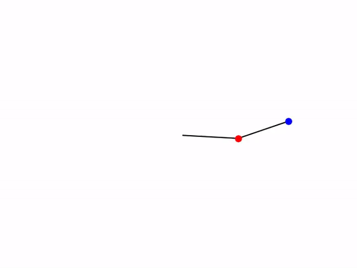

John Yeo
Programming
Each project has an overview along with an abstract written up in LaTeX to explain in more detail the premise of the project, a download for a .txt
file of the sourcecode and links to any relevant animations etc.
Wavefunction Evolution

This project was to create an animation of a quantum mechanical system's time evolution. The system was a single particle
constrained to an infinite 2D potential square well.
The initial state being a localised peak at the centre of the
square well.
Quantum Abstract
SourceCode
Wavefunction Animation
Lagrangian Mechanics Simulation 
The system being modelled here is the double pendulum; a lagrangian approach was used to formulate the relevant equations of motion. The last link is a video of the double pendulum, showing the chaotic nature of it's motion.
Cornu Spiral Calculator

The cornu spiral calculator is a program which takes in two inputs, the limits for the integration that results in the cornu spiral, and gives a complex number output. I am working on trying to embed it into html code to have an online cornu spiral calculator that can be used without installing python, and hopefully with more interactive features.